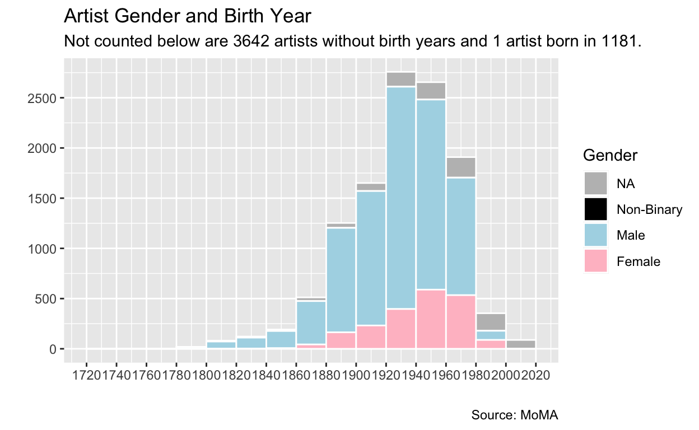
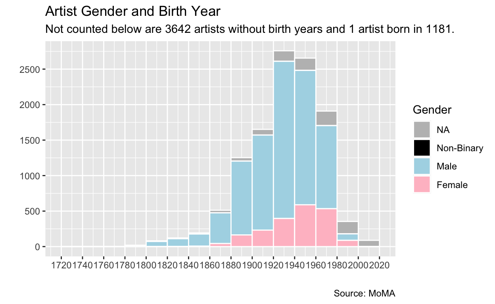

There are 15,243 different artists in the MoMa spreadsheet, Artists.csv. The first 10,00 are listed in the table below.
Original Table*
*The table as shown has been modified to standardize capitalization in the gender field.
Gross Quality Check: Percent of blank values in each column
Nationality
There are 120 different artist nationalities. There are 2,472 artists for whom a nationality is not given
Artist Birth Year
Most artists are born in the 20th century. There are 3,642 artists for whom a birth year is not given.

Gender
Most artists are male. There are 3,165 artists for whom a gender is not given.
 
